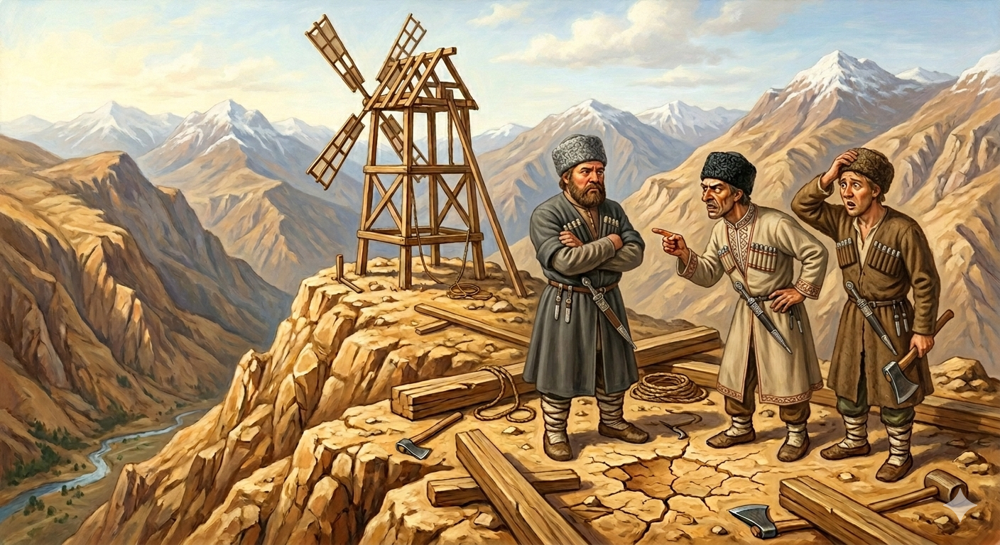

И.А. Дахкильгов. Хьехаме дувцарш - поучительные рассказы-притчи.
И.А. Дахкильгов. Хьехаме дувцарш - поучительные рассказы-притчи. Из ингушского фольклора.

ХьалхагӀа хий тӀадоаладе деза
Ӏовдала кхо саг вӀашагӀакхийттав. ВаӀад яьй цар: "Цхьанна сага воаш леладер фуд ца хойташ, хьайра хьалъергья вай". Ӏур-Ӏура къайлагӀа лоам хьала а ухаш, циггач хьунагӀа хьайра еш хиннаб уж. Мича ух шо, фу до оаш, аьнна хаьтача, цхьацца оалаш оапаш бувцаш хиннаб. Цу кхаь къонахчун цхьанне сесаг хиннай моллагӀча хӀаманна дух тӀа яргйолаш. ТӀеххьара ший маьрага дарий дейтад цо: хьайра еш да тхо, аьннад марас. - Цу лоам бухье, цхьаккха хий доацача метте мишта ю оаш из хьайра? - цецъяьннай сесаг. Шоаш юха вӀашагӀакхийттача, къонахчо аьннад: - Хьа ма йой вай ер хьайра, хий мичара тӀадоаладергда вай укхунна? ДӀай-хьай хьежав вож шиъ. Шоашта тийшаболх хинналга хайнад царна. Шоай новкъостага хаьттад цар: - Хьа хьай хьаькъал дӀакхоачаргдацар из хий дагадоха. Малав хьога из аьннар? - ЦӀагӀараяр я, - аьннад къонахчо. - Ишттал мара кхы вай барт боацача вай хьайра мичара ергьяр! - аьнна, эгӀазбаха дӀабахаб уж. Иштта хул уйла ца еш даьча хӀамах.
РУССКИЙ
Сначала надо воду подвести
Трое глупцов решили: "Давайте, построим мельницу, но так, чтобы никто о нашей постройке не знал". По утрам они незаметно уходили в горы и там строили мельницу. Люди стали интересоваться: куда и зачем они ходят. Глупцы отделывались от них разными небылицами. Но жена одного из них была весьма дотошной женщиной и, выпытала у своего мужа, чем они занимаются. "Кто строит мельницу на вершине горы, куда невозможно подвести воды?" - удивилась женщина. На следующий день, когда на стройке вновь встретились эти глупцы, муж той женщины сказал: - Строим мы мельницу, но не подумали, откуда мы подведем к ней воду. Двое других мужчин переглянулись. Глупцы глупцами, но догадались, что что-то нечисто, и спросили своего товарища: - Своим умом ты не дошел бы этого. Скажи, кто тебя надоумил? - Жена, - ответил он. - Если мы не умеем хранить тайны и между нами нет согласия, разве мы построим мельницу! - сказали в сердцах мужчины и разошлись. Так бывает, когда к делу приступают, не подумав.
ENGLISH
First, you need to connect the water supply
Three fools decided: 'Let's build a mill, but let's do it so that nobody knows about it.' Every morning they would slip away unnoticed into the mountains and build the mill there. People began to wonder where they were going and why. The fools fobbed them off with all sorts of tall tales. But the wife of one of them was a very inquisitive woman and managed to pry out of her husband what they were up to. 'Who's building a mill on top of a mountain, where it's impossible to bring water?' the woman asked in astonishment. The next day, when these fools met again at the building site, the woman's husband said: 'We're building a mill, but we haven't thought about where we'll get the water from.' The other two men exchanged glances. Fools though they were, they realised something was amiss and asked their companion: 'You wouldn't have worked that out on your own. Tell us, who put that idea in your head?' 'My wife,' he replied. 'If we can't keep secrets and there's no harmony between us, how on earth are we ever going to build a mill!' the men said angrily, and went their separate ways. That's what happens when you set about a task without thinking it through.
НОХЧИЙН
ПОГОВОРКИ
Ахьар доацаш хьайра йисаянц. Без помола мельница не останется. A mill never stops grinding. Ялта боцуш хьайра ца висна.Дукха лер – гӀалат валар. Много говорить – ошибку допустить. To talk too much is to make a mistake. Дукха дуьйцу верг г1алат дан ву.“Ер де сона хац”, оалараш нийсалу, “дуаш-молаш вац со” оалараш нийсалац. Есть говорящие – “это не умею делать”, но нет говорящих – “я не пью и не ем”. There are people who say, "I don't know how to do this," but no one ever says, "I don't eat or drink." «Х1ара ас дан ца хаьа» олу нах хуьлу, «со юуш-молуш вац» олу нах ца хуьлу.Йолаенна хьайра сецаяц, болабенна болх а сецабац. Как не останавливают завертевшуюся мельницу, так не прерывают и начатую работу. Just as a spinning mill is not stopped mid-turn, work already begun is not left unfinished. Долавелла хьайра ца соцу, долаелла болх а ца соцу.Лоамаш сийрдадоах малхо, саг – хьаькъало. Горы озаряет солнце, человека украшает ум. The sun lights up the mountains; wisdom adorns a person. Лаьмнаш серладаьр малх ду, стаг хазвайтарг хьекъал ду.Хиво хьайра кхестаю, хьаьрхочо боал ийбу. Вода мельницу крутит, а мельник гарнец (налог с помола) собирает. Water turns the millstone; the miller collects the toll of flour. Хиво хьайра тохку, хьайрхочо мохал схьаоьцу.Хий доацача хьайра оттаяц. Мельницу не ставят там, где нет воды. No mill is built where there is no water. Хи боцучохь хьайра ца оттадо.Хьарара воагӀачо тӀем тӀара воагӀар къарваьв. Идущий с мельницы одолел (в споре, в жизненных делах) идущего с войны. One returning from the mill got the better of one returning from war. Хьайрара веана верга т1аьхьадаьккхина т1амара веана верг.Хьаьр тӀа доккхагӀа дола шайтӀа хьаьрхо ше ва. На мельнице самый большой шайтан – сам мельник. The biggest devil at the mill is the miller himself. Хьайра т1ехь массарел доккха шайт1а хьайрхо ша ву.Цхьан кхалсага дагадохар итт къонахчоа дагадохаргдац. Женщина придумает такое, что и десяти мужчинам на ум не придет. A single woman can dream up more than ten worthy men put together. Цхьана зудчун дагадеанарг итта къонахчун дага ца доьду.Шийна хӀама ца ховчо хьехараш ду. Незнающий любит давать советы. One who doesn't know a thing is always ready with advice. Шена х1ума ца хаьар хьехам бан веза.Шозза аьннар хьара а хоз. Дважды сказанное и на мельнице услышали. What was said twice was heard even at the mill. Шозза аьлларг хьайрахь а хезна.